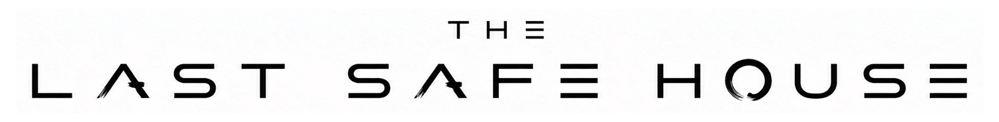
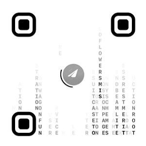

Restore the Rain
Not invented. Found.
The page gives no speech until the hand leaves a mark.
I did not this door. I a seam. It first wore the mask of a harmless . Then the file opened into . This childish lock is a , and also a . Observe the while the broadcast makes weather in the room. The voice may touch the exact your cursor is holding. Beyond this sieve: a .
Architecture of Rain
A clean room. A weather that forgot its shape.
The scar is quiet.
A closed thing may still leave weather.
The Field That Looks Back
The alphabet has no handle. The hand becomes the weather.
The second weather has not entered the room.
THE GATE HAS NO KEYHOLE
The path is not for sale.
The next room opens for everyone.
When the public scale reaches 1999,
the lock becomes a door.
FIX THE SHIP
The sea is already inside the interface.
Do not count waves. Mark the holes.
1999 SIGNALS OPEN THE NEXT ROOM
One verified first-pass completion adds one signal.
One USDT adds one signal.
Any combination opens the second quest for everyone.
TON network only.
TON_ADDRESS_PLACEHOLDER
USDT on TON only.
USDT_TON_ADDRESS_PLACEHOLDER
Tron network only.
USDT_TRC20_ADDRESS_PLACEHOLDER
BNB Smart Chain only.
USDT_BEP20_ADDRESS_PLACEHOLDER
Send only the selected asset on the selected network. Wrong network may destroy the signal.
VERIFY / FUND ROUTES